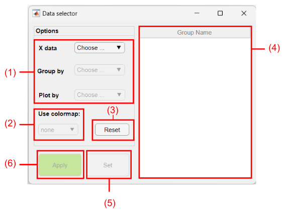
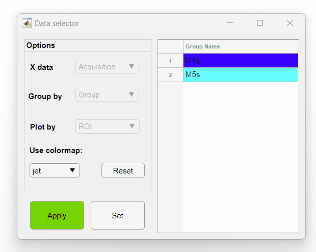
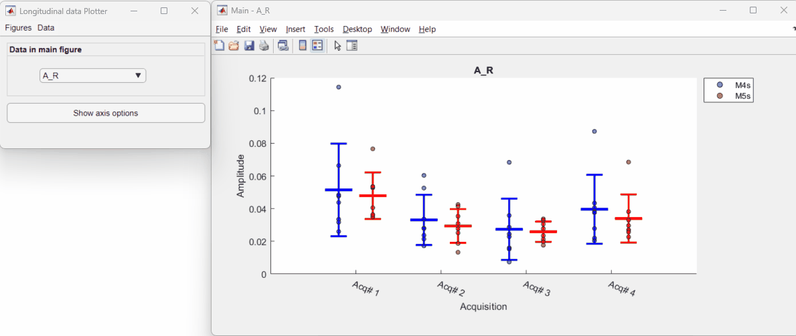

This tool is part of the Line/Box plot tool. As described in the plot tool documentation, the data is plotted as color-coded groups (experimental groups by default) as a function of one dimension in the X axis (acquisitions by default) with each plot containing the data of a second dimension (observations by default). In brief, this tool allows one to change how the data is represented by permuting these three parameters.
Here are all possible dimensions that can be interchanged using the Data selector tool:

Components of the Data selector interface
Drop down menus with dimensions to be assigned to:
Note
For time series data, the X data option is pre-selected as Time and cannot be changed.
The selection must be performed in this order.
Select the colormap of the Group by dimension items. If none is selected, a distinct color will be assigned to each item.
Click on the Reset button to erase the selected dimensions from the drop dowm menus (1).
List of items from the grouped dimension set in the Group by drop down menu.
Tip You can customize the selected colormap by clicking on an item and changing its color:
Once all dimensions and colormap are selected, click on the Set button to apply the changes and show the items in the group list (4).
Click on the Apply button (6) to rearrange the data and recreate the plots in the Line/Box plot tool.
Here is an example on how to use the Data selector tool to rearrange the data in the Line/Box plot tool. In this example, we will plot the data from the experimental groups as a function of events with each plot containing the data from a given observation:

*Summary figures not shown.